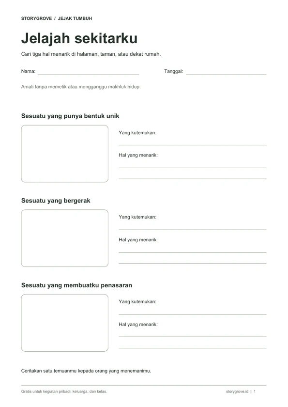

Learning activities · Dalam pengembangan
Ruang latihan dan bermain untuk anak.
Pilih aktivitas, coba sendiri, lalu ceritakan yang ditemukan.
Try & learn.
Pilih yang ingin dicoba hari ini.
Numerasi
Bermain garis bilangan
Lihat cara penjumlahan dan pengurangan bekerja lewat langkah maju dan mundur.
Coba aktivitas ↗Logika & kreativitas
Buat game sendiri
Susun jalan, letakkan koin, lalu mainkan level buatanmu. Ubah dan coba lagi.
Mulai membuat ↗Matematika · Kelas 6 SD
Latihan soal
Kerjakan soal, lihat hasilnya, lalu pelajari pembahasan untuk bagian yang belum dipahami.
Mulai latihan ↗
Gratis · PDF A4Little discoveries.
Tiga worksheet untuk menjelajah tanpa layar.
- Jelajah sekitarkuAmati dan gambar tiga temuan kecil.
- Hitung temuanmuCatat jumlah, lalu bandingkan.
- Cerita sehelai daunBuat cerita dengan gambar dan kata-katamu.
3 halaman · A4 · Hemat tinta · Tanpa pendaftaran
Temani prosesnya.
Biarkan anak mencoba dengan caranya. Saat menemui kesulitan, tanyakan apa yang sudah mereka lakukan dan apa yang ingin dicoba berikutnya. Hasil akhir bukan satu-satunya hal yang bisa dibicarakan.
Bicarakan kebutuhan aktivitas sekolah ↗Dalam tahap pengembangan
Bertumbuh bersama.
Jejak Tumbuh masih terus dikembangkan. Kami mengajak pendidik, orang tua, dan komunitas untuk berbagi kebutuhan serta merancang aktivitas yang membantu anak mengenali kemampuannya, di layar maupun di dunia nyata.
Masih ada cerita lainnya.
← Kembali ke Storygrove